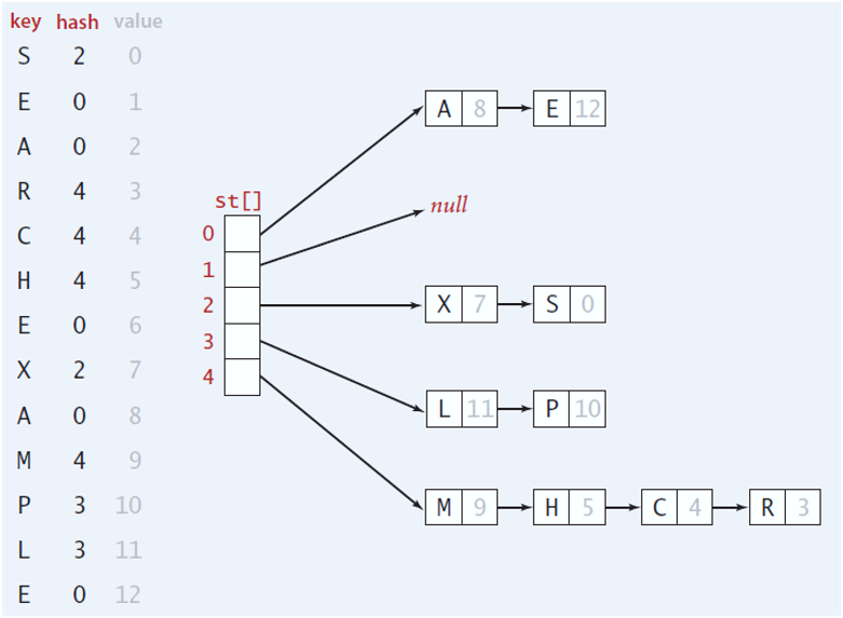

<!DOCTYPE html>
<html lang="en">
  <head>
    <meta charset="utf-8" />
    <meta name="viewport" content="width=device-width, initial-scale=1.0, maximum-scale=1.0, user-scalable=no" />

    <title></title>
    <link rel="stylesheet" href="dist/reveal.css" />
    <link rel="stylesheet" href="dist/theme/iph.css" id="theme" />
    <link rel="stylesheet" href="plugin/highlight/spyder.css" />
	<link rel="stylesheet" href="css/layout.css" />
	<link rel="stylesheet" href="plugin/customcontrols/style.css">


    <script defer src="dist/fontawesome/all.min.js"></script>

	<script type="text/javascript">
		var forgetPop = true;
		function onPopState(event) {
			if(forgetPop){
				forgetPop = false;
			} else {
				parent.postMessage(event.target.location.href, "app://obsidian.md");
			}
        }
		window.onpopstate = onPopState;
		window.onmessage = event => {
			if(event.data == "reload"){
				window.document.location.reload();
			}
			forgetPop = true;
		}

		function fitElements(){
			const itemsToFit = document.getElementsByClassName('fitText');
			for (const item in itemsToFit) {
				if (Object.hasOwnProperty.call(itemsToFit, item)) {
					var element = itemsToFit[item];
					fitElement(element,1, 1000);
					element.classList.remove('fitText');
				}
			}
		}

		function fitElement(element, start, end){

			let size = (end + start) / 2;
			element.style.fontSize = `${size}px`;

			if(Math.abs(start - end) < 1){
				while(element.scrollHeight > element.offsetHeight){
					size--;
					element.style.fontSize = `${size}px`;
				}
				return;
			}

			if(element.scrollHeight > element.offsetHeight){
				fitElement(element, start, size);
			} else {
				fitElement(element, size, end);
			}		
		}


		document.onreadystatechange = () => {
			fitElements();
			if (document.readyState === 'complete') {
				if (window.location.href.indexOf("?export") != -1){
					parent.postMessage(event.target.location.href, "app://obsidian.md");
				}
				if (window.location.href.indexOf("print-pdf") != -1){
					let stateCheck = setInterval(() => {
						clearInterval(stateCheck);
						window.print();
					}, 250);
				}
			}
	};


        </script>
  </head>
  <body>
    <div class="reveal">
      <div class="slides"><section  data-markdown><script type="text/template"><!-- .slide: class="has-light-background drop" data-background-color="#f8f8f8" -->
<div class="" style="position: absolute; left: 0px; top: 0px; height: 700px; width: 960px; min-height: 700px; display: flex; flex-direction: column; align-items: center; justify-content: center" absolute="true">

### Estructura de Datos y Algoritmos - EDA

####  *Separate Chaining*

[Eduardo Rosales](mailto:ee.rosales24@uniandes.edu.co)

Departamento de Ingeniería de Sistemas y Computación

Universidad de los Andes
</div></script></section><section  data-markdown><script type="text/template"><!-- .slide: class="has-light-background drop" data-background-color="#f8f8f8" -->
<div class="" style="position: absolute; left: 0px; top: 0px; height: 700px; width: 960px; min-height: 700px; display: flex; flex-direction: column; align-items: center; justify-content: center" absolute="true">

### División de responsabilidades (repaso)


</div></script></section><section  data-markdown><script type="text/template"><!-- .slide: class="has-light-background drop" data-background-color="#f8f8f8" -->
<div class="" style="position: absolute; left: 0px; top: 0px; height: 700px; width: 960px; min-height: 700px; display: flex; flex-direction: column; align-items: center; justify-content: center" absolute="true">

### Manejo de colisiones (repaso)

- Sin importar el método usado por la función de compresión
	- **Siempre habrá colisiones**
- Las colisiones pueden reducirse
	- Pero no evitarse

	<br>
- Solución:
	- Hay que aprender a **manejar las colisiones**
</div></script></section><section  data-markdown><script type="text/template"><!-- .slide: class="has-light-background drop" data-background-color="#f8f8f8" -->
<div class="" style="position: absolute; left: 0px; top: 0px; height: 700px; width: 960px; min-height: 700px; display: flex; flex-direction: column; align-items: center; justify-content: center" absolute="true">

### Resolución de colisiones


- Hay dos métodos muy conocidos

	- Linear probing (Sondeo lineal)
	- **Separate chaining** (Encadenamiento separado)

	<br>
- En esta clase estudiaremos:
	- Separate chaining o Encadenamiento separado
</div></script></section><section  data-markdown><script type="text/template"><!-- .slide: class="has-light-background drop" data-background-color="#f8f8f8" -->
<div class="" style="position: absolute; left: 0px; top: 0px; height: 700px; width: 960px; min-height: 700px; display: flex; flex-direction: column; align-items: center; justify-content: center" absolute="true">

### Separate chaining (Encadenamiento separado)

- En este ejemplo hay
	- Agregación por el inicio



</div></script></section><section  data-markdown><script type="text/template"><!-- .slide: class="has-light-background drop" data-background-color="#f8f8f8" -->
<div class="" style="position: absolute; left: 0px; top: 0px; height: 700px; width: 960px; min-height: 700px; display: flex; flex-direction: column; align-items: center; justify-content: center" absolute="true">

### Función de hash

- Aunque el proceso de obtener un hash
	- Se divide en dos funciones:
		- **Función de hash:**
			- Produce el hashcode
		- **Función de compresión:**
			- Produce el índice válido en el arreglo
	- A todo ese proceso
		- Se suele llama *función de hash*
</div></script></section><section  data-markdown><script type="text/template"><!-- .slide: class="has-light-background drop" data-background-color="#f8f8f8" -->
<div class="" style="position: absolute; left: 0px; top: 0px; height: 700px; width: 960px; min-height: 700px; display: flex; flex-direction: column; align-items: center; justify-content: center" absolute="true">

### Bucket array (1/2)

- Llamado también _Arreglo de cubetas_
	- Es una estructura bidimensional
	- Arreglo de listas
		- Donde cada índice 
			- Da acceso a un bucket (lista)
- Cada bucket
	- Almacena cero, uno o múltiples elementos
</div></script></section><section  data-markdown><script type="text/template"><!-- .slide: class="has-light-background drop" data-background-color="#f8f8f8" -->
<div class="" style="position: absolute; left: 0px; top: 0px; height: 700px; width: 960px; min-height: 700px; display: flex; flex-direction: column; align-items: center; justify-content: center" absolute="true">

### Bucket array (2/2)


</div></script></section><section  data-markdown><script type="text/template"><!-- .slide: class="has-light-background drop" data-background-color="#f8f8f8" -->
<div class="" style="position: absolute; left: 0px; top: 0px; height: 700px; width: 960px; min-height: 700px; display: flex; flex-direction: column; align-items: center; justify-content: center" absolute="true">

### Resolución de colisiones con un bucket array (1/4)


- El objetivo final de la función hash es mapear una llave k
- A un índice entero en el rango \[`0` a `N - 1` ó  `1` a `N`\]
	- En donde `N` es la capacidad del bucket array

	<br>


</div></script></section><section  data-markdown><script type="text/template"><!-- .slide: class="has-light-background drop" data-background-color="#f8f8f8" -->
<div class="" style="position: absolute; left: 0px; top: 0px; height: 700px; width: 960px; min-height: 700px; display: flex; flex-direction: column; align-items: center; justify-content: center" absolute="true">

### Resolución de colisiones con un bucket array (2/4)

- **Escenario irrealista**:
	- Sin límites de tiempo
		- La colisión se resolvería con búsqueda secuencial
	- Dentro de un bucket
		- Varias llaves podrían compartir un mismo índice
	- No importaría la saturación de un bucket
		- La búsqueda secuencial, con su complejidad O(n)
			- Sería suficiente
</div></script></section><section  data-markdown><script type="text/template"><!-- .slide: class="has-light-background drop" data-background-color="#f8f8f8" -->
<div class="" style="position: absolute; left: 0px; top: 0px; height: 700px; width: 960px; min-height: 700px; display: flex; flex-direction: column; align-items: center; justify-content: center" absolute="true">

### Resolución de colisiones con un bucket array (3/4)

- **Escenario realista**:
	- Hay límites de tiempo
		- Hay que evitar búsquedas secuenciales extensas
			- De tal forma que
				- Su complejidad tienda más a **0(1)**
					- Que a ~0(n)~
</div></script></section><section  data-markdown><script type="text/template"><!-- .slide: class="has-light-background drop" data-background-color="#f8f8f8" -->
<div class="" style="position: absolute; left: 0px; top: 0px; height: 700px; width: 960px; min-height: 700px; display: flex; flex-direction: column; align-items: center; justify-content: center" absolute="true">

### Resolución de colisiones con un bucket array (4/4)

- **Escenario realista**:
	- Cada bucket debería tener un tamaño razonable
		- Ese tamaño deberá ajustarse para hacer uso eficiente de la memoria
	- El tiempo de búsqueda debe ser eficiente
		- Nadie usaría una aplicación
			- Que tome un tiempo excesivo en realizar una búsqueda
				- Más aún si es sencilla y frecuente (Ej: Por ID)
</div></script></section><section  data-markdown><script type="text/template"><!-- .slide: class="has-light-background drop" data-background-color="#f8f8f8" -->
<div class="" style="position: absolute; left: 0px; top: 0px; height: 700px; width: 960px; min-height: 700px; display: flex; flex-direction: column; align-items: center; justify-content: center" absolute="true">

### Separate chaining y función de hash

- Si la función de hash es **eficiente** y logra una **distribución uniforme**

- Cada bucket (lista) **tenderá a una longitud similar**
	- Ideal una longitud muy corta
		- Búsqueda, inserción y eliminación serán eficientes
</div></script></section><section  data-markdown><script type="text/template"><!-- .slide: class="has-light-background drop" data-background-color="#f8f8f8" -->
<div class="" style="position: absolute; left: 0px; top: 0px; height: 700px; width: 960px; min-height: 700px; display: flex; flex-direction: column; align-items: center; justify-content: center" absolute="true">

### Separate chaining y listas enlazadas simples


- En separate chaining
	- Cada bucket generalmente es una lista enlazada
		- Típicamente, con apuntador a la cola (head-tail list)


</div></script></section><section  data-markdown><script type="text/template"><!-- .slide: class="has-light-background drop" data-background-color="#f8f8f8" -->
<div class="" style="position: absolute; left: 0px; top: 0px; height: 700px; width: 960px; min-height: 700px; display: flex; flex-direction: column; align-items: center; justify-content: center" absolute="true">

### Estudiemos las operaciones básicas de un mapa que usa separate chaining
</div></script></section><section  data-markdown><script type="text/template"><!-- .slide: class="has-light-background drop" data-background-color="#f8f8f8" -->
<div class="" style="position: absolute; left: 0px; top: 0px; height: 700px; width: 960px; min-height: 700px; display: flex; flex-direction: column; align-items: center; justify-content: center" absolute="true">

### Inserción - `put()`
</div></script></section><section  data-markdown><script type="text/template"><!-- .slide: class="has-light-background drop" data-background-color="#f8f8f8" -->
<div class="" style="position: absolute; left: 0px; top: 0px; height: 700px; width: 960px; min-height: 700px; display: flex; flex-direction: column; align-items: center; justify-content: center" absolute="true">

### Inserción - `put()`


- Mejor caso:
    - Se inserta en una lista vacía
        
- Si la posición está ocupada
    - Inserta en la lista enlazada (un bucket):
	    - Hay dos posibilidades
	        - Al inicio o
		        - Al final
</div></script></section><section  data-markdown><script type="text/template"><!-- .slide: class="has-light-background drop" data-background-color="#f8f8f8" -->
<div class="" style="position: absolute; left: 0px; top: 0px; height: 700px; width: 960px; min-height: 700px; display: flex; flex-direction: column; align-items: center; justify-content: center" absolute="true">

### Algoritmo de inserción (1/5)

- **Cálculo del índice**:
    - Se obtiene el hash de la llave
    - Se calcula el índice en el arreglo
        
- **Creación de nodo**:
    - Se crea un nodo con la pareja (llave, valor)
</div></script></section><section  data-markdown><script type="text/template"><!-- .slide: class="has-light-background drop" data-background-color="#f8f8f8" -->
<div class="" style="position: absolute; left: 0px; top: 0px; height: 700px; width: 960px; min-height: 700px; display: flex; flex-direction: column; align-items: center; justify-content: center" absolute="true">

### Algoritmo de inserción (2/5)

- **Búsqueda de colisión**:
    - Si la posición está vacía
        - Se inserta
            - Se retorna el mapa actualizado
                
    - Caso contrario
        - Se accede a la lista enlazada (bucket)
</div></script></section><section  data-markdown><script type="text/template"><!-- .slide: class="has-light-background drop" data-background-color="#f8f8f8" -->
<div class="" style="position: absolute; left: 0px; top: 0px; height: 700px; width: 960px; min-height: 700px; display: flex; flex-direction: column; align-items: center; justify-content: center" absolute="true">

### Algoritmo de inserción (3/5)

- **Búsqueda en la lista (bucket)**:    
    - Recorre la lista enlazada
        - Si la llave existe
            - Reemplaza el valor
        - Si no existe
            - Inserta un nuevo nodo
</div></script></section><section  data-markdown><script type="text/template"><!-- .slide: class="has-light-background drop" data-background-color="#f8f8f8" -->
<div class="" style="position: absolute; left: 0px; top: 0px; height: 700px; width: 960px; min-height: 700px; display: flex; flex-direction: column; align-items: center; justify-content: center" absolute="true">

### Algoritmo de inserción (4/5)

- **Estrategia de inserción**:
    - Se puede insertar
        - Al inicio de la lista ó
	        - Al final de la lista
            
- **Incremento de tamaño**:
    - Si es una nueva llave
        - Incrementa el tamaño del mapa
        - Se actualiza el factor de carga
</div></script></section><section  data-markdown><script type="text/template"><!-- .slide: class="has-light-background drop" data-background-color="#f8f8f8" -->
<div class="" style="position: absolute; left: 0px; top: 0px; height: 700px; width: 960px; min-height: 700px; display: flex; flex-direction: column; align-items: center; justify-content: center" absolute="true">

### Algoritmo de inserción (5/5)

- **Verificación de rehash**:
    - Si el factor de carga supera el umbral
        - Ejecuta rehash
</div></script></section><section  data-markdown><script type="text/template"><!-- .slide: class="has-light-background drop" data-background-color="#f8f8f8" -->
<div class="" style="position: absolute; left: 0px; top: 0px; height: 700px; width: 960px; min-height: 700px; display: flex; flex-direction: column; align-items: center; justify-content: center" absolute="true">

### Ejemplo inserción al final


</div></script></section><section  data-markdown><script type="text/template"><!-- .slide: class="has-light-background drop" data-background-color="#f8f8f8" -->
<div class="" style="position: absolute; left: 0px; top: 0px; height: 700px; width: 960px; min-height: 700px; display: flex; flex-direction: column; align-items: center; justify-content: center" absolute="true">

### Ejemplo inserción al inicio


 <!-- .element: style="width: 55%; height: 55%" -->
</div></script></section><section  data-markdown><script type="text/template"><!-- .slide: class="has-light-background drop" data-background-color="#f8f8f8" -->
<div class="" style="position: absolute; left: 0px; top: 0px; height: 700px; width: 960px; min-height: 700px; display: flex; flex-direction: column; align-items: center; justify-content: center" absolute="true">

### Inserción - Complejidad temporal (1/2)

- **Mejor caso - O(1)**:
    - La inserción sucede en una lista vacía
        - Porque no hay colisiones en el índice
            
- **Caso promedio - Generalmente O(1)**:
    - Cuando la distribución de hash es uniforme
    - Depende del factor de carga y la longitud promedio de las listas
        - Listas cortas implican inserción más rápida
            
- **Peor caso - O(n)**:
    - Cuando muchas llaves colisionan en el mismo índice
        - Se forman listas largas y la búsqueda tiende hasta O(n)
</div></script></section><section  data-markdown><script type="text/template"><!-- .slide: class="has-light-background drop" data-background-color="#f8f8f8" -->
<div class="" style="position: absolute; left: 0px; top: 0px; height: 700px; width: 960px; min-height: 700px; display: flex; flex-direction: column; align-items: center; justify-content: center" absolute="true">

### Inserción - Complejidad temporal (2/2)

- Hay amortización:
    - Rehashing es necesario cuando el factor de carga supera un umbral
        - Lo que implica un rehash de complejidad O(n)
            - Pero se amortiza sobre muchas inserciones
                - Y se puede considerar **O(1)**
</div></script></section><section  data-markdown><script type="text/template"><!-- .slide: class="has-light-background drop" data-background-color="#f8f8f8" -->
<div class="" style="position: absolute; left: 0px; top: 0px; height: 700px; width: 960px; min-height: 700px; display: flex; flex-direction: column; align-items: center; justify-content: center" absolute="true">

### Búsqueda - `get()`
</div></script></section><section  data-markdown><script type="text/template"><!-- .slide: class="has-light-background drop" data-background-color="#f8f8f8" -->
<div class="" style="position: absolute; left: 0px; top: 0px; height: 700px; width: 960px; min-height: 700px; display: flex; flex-direction: column; align-items: center; justify-content: center" absolute="true">

### Búsqueda - `get()`


- Mejor caso:
    - La llave está en el índice y es la primera buscada en la lista
        
- En colisión:
    - Se recorre la lista enlazada
        - Caso llave existe:
            - Se encuentra en la lista y se retorna el valor
        - Caso llave inexistente:
            - Se recorre toda la lista sin encontrar coincidencias
</div></script></section><section  data-markdown><script type="text/template"><!-- .slide: class="has-light-background drop" data-background-color="#f8f8f8" -->
<div class="" style="position: absolute; left: 0px; top: 0px; height: 700px; width: 960px; min-height: 700px; display: flex; flex-direction: column; align-items: center; justify-content: center" absolute="true">

### Algoritmo de búsqueda (1/2)

- **Cálculo del índice**:
    - Se obtiene el hash de la llave
    - Se calcula el índice en el arreglo
        
- **Búsqueda en la posición**:
    - Se accede a la lista enlazada
    - Se recorre nodo por nodo
        - Si la llave está en un nodo
            - Se retorna el valor asociado
                
        - Caso contrario (elemento no existente)
            - Continúa el recorrido hasta el final de la lista
</div></script></section><section  data-markdown><script type="text/template"><!-- .slide: class="has-light-background drop" data-background-color="#f8f8f8" -->
<div class="" style="position: absolute; left: 0px; top: 0px; height: 700px; width: 960px; min-height: 700px; display: flex; flex-direction: column; align-items: center; justify-content: center" absolute="true">

### Algoritmo de búsqueda (2/2)

- **Finalización de la búsqueda**:
    - Si se encuentra la llave
        - Retorna el valor
    - Si se llega al final de la lista sin encontrarla
        - Retorna `None` (o similares) 
	        - Indicando que la llave no existe
</div></script></section><section  data-markdown><script type="text/template"><!-- .slide: class="has-light-background drop" data-background-color="#f8f8f8" -->
<div class="" style="position: absolute; left: 0px; top: 0px; height: 700px; width: 960px; min-height: 700px; display: flex; flex-direction: column; align-items: center; justify-content: center" absolute="true">

### Búsqueda - Complejidad temporal (1/4)

- **Mejor caso - O(1)**:
    - La llave existe y es la primera buscada en la lista enlazada (bucket)
</div></script></section><section  data-markdown><script type="text/template"><!-- .slide: class="has-light-background drop" data-background-color="#f8f8f8" -->
<div class="" style="position: absolute; left: 0px; top: 0px; height: 700px; width: 960px; min-height: 700px; display: flex; flex-direction: column; align-items: center; justify-content: center" absolute="true">

### Búsqueda - Complejidad temporal (2/4)

- **Caso promedio - Generalmente O(1)**:
    - Cuando las listas son cortas
    - Depende del factor de carga y la distribución de hash
        - Menos colisiones significan listas más pequeñas y búsquedas rápidas
</div></script></section><section  data-markdown><script type="text/template"><!-- .slide: class="has-light-background drop" data-background-color="#f8f8f8" -->
<div class="" style="position: absolute; left: 0px; top: 0px; height: 700px; width: 960px; min-height: 700px; display: flex; flex-direction: column; align-items: center; justify-content: center" absolute="true">

### Búsqueda - Complejidad temporal (3/4)

- _Complejidad moderada:_
	- Con distribución uniforme
		- **O(n/m)**, donde:
			- `n` es el número total de elementos y
			- `m` es el número de buckets
			- `n/m` representa la longitud promedio de las listas encadenadas
				- Asumiendo una **distribución uniforme** de las llaves
</div></script></section><section  data-markdown><script type="text/template"><!-- .slide: class="has-light-background drop" data-background-color="#f8f8f8" -->
<div class="" style="position: absolute; left: 0px; top: 0px; height: 700px; width: 960px; min-height: 700px; display: flex; flex-direction: column; align-items: center; justify-content: center" absolute="true">

### Búsqueda - Complejidad temporal (4/4)

- **Peor caso - O(n)**:
    - Cuando todas las llaves se concentran en un único bucket
	    - Y la llave buscada no existe (búsqueda completa)
	- Escenario improbable con una función de hash eficaz y 
		- Una distribución uniforme de las llaves
</div></script></section><section  data-markdown><script type="text/template"><!-- .slide: class="has-light-background drop" data-background-color="#f8f8f8" -->
<div class="" style="position: absolute; left: 0px; top: 0px; height: 700px; width: 960px; min-height: 700px; display: flex; flex-direction: column; align-items: center; justify-content: center" absolute="true">

### Eliminación - `remove()`
</div></script></section><section  data-markdown><script type="text/template"><!-- .slide: class="has-light-background drop" data-background-color="#f8f8f8" -->
<div class="" style="position: absolute; left: 0px; top: 0px; height: 700px; width: 960px; min-height: 700px; display: flex; flex-direction: column; align-items: center; justify-content: center" absolute="true">

### Eliminación - `remove()`


- Mejor caso:
    - La llave a eliminar es la primera buscada en la lista enlazada
        
- En colisión:
    - Se recorre la lista enlazada
        - Caso llave existe:
            - Se encuentra y se elimina

        - Caso llave inexistente:            
            - Se recorre toda la lista sin encontrar coincidencias
</div></script></section><section  data-markdown><script type="text/template"><!-- .slide: class="has-light-background drop" data-background-color="#f8f8f8" -->
<div class="" style="position: absolute; left: 0px; top: 0px; height: 700px; width: 960px; min-height: 700px; display: flex; flex-direction: column; align-items: center; justify-content: center" absolute="true">

### Algoritmo de eliminación (1/3)

- **Cálculo del índice**:
    - Se obtiene el hash de la llave
    - Se calcula el índice en el arreglo
        
- **Búsqueda de la llave**:
    - Se recorre la lista enlazada
        - Si la llave está en la lista
            - Se elimina
	            - Se retorna el mapa actualizado
                
        - Caso contrario
            - Se recorre hasta el final
</div></script></section><section  data-markdown><script type="text/template"><!-- .slide: class="has-light-background drop" data-background-color="#f8f8f8" -->
<div class="" style="position: absolute; left: 0px; top: 0px; height: 700px; width: 960px; min-height: 700px; display: flex; flex-direction: column; align-items: center; justify-content: center" absolute="true">

### Algoritmo de eliminación (2/3)

- **Eliminación del nodo**
    - Si la llave fue encontrada
        - Se elimina el nodo de la lista enlazada
            
- **Ajuste de la estructura**
    - Se enlazan los nodos anterior y siguiente
    - Se ajusta el tamaño del mapa
</div></script></section><section  data-markdown><script type="text/template"><!-- .slide: class="has-light-background drop" data-background-color="#f8f8f8" -->
<div class="" style="position: absolute; left: 0px; top: 0px; height: 700px; width: 960px; min-height: 700px; display: flex; flex-direction: column; align-items: center; justify-content: center" absolute="true">

### Algoritmo de eliminación (3/3)

- **Verificación de rehash**:
    - Si el factor de carga es demasiado bajo
        - Se ejecuta rehash
        
- **Retorno del mapa**:
    - Retorna el mapa actualizado
</div></script></section><section  data-markdown><script type="text/template"><!-- .slide: class="has-light-background drop" data-background-color="#f8f8f8" -->
<div class="" style="position: absolute; left: 0px; top: 0px; height: 700px; width: 960px; min-height: 700px; display: flex; flex-direction: column; align-items: center; justify-content: center" absolute="true">

### Eliminación - Complejidad temporal (1/2)

- **Mejor caso - O(1)**:
    - La llave es la primera buscada en la lista enlazada
        
- **Caso promedio - Generalmente O(1)**:
    - Cuando las listas son cortas
    - Depende del factor de carga y la distribución de hash
        - Menos colisiones significan listas más pequeñas y eliminaciones rápidas
            
- **Peor caso - O(n)**:
    - Cuando muchas llaves colisionan en el mismo índice
        - Se forman listas largas y la eliminación tiende hasta O(n)
</div></script></section><section  data-markdown><script type="text/template"><!-- .slide: class="has-light-background drop" data-background-color="#f8f8f8" -->
<div class="" style="position: absolute; left: 0px; top: 0px; height: 700px; width: 960px; min-height: 700px; display: flex; flex-direction: column; align-items: center; justify-content: center" absolute="true">

### Eliminación - Complejidad temporal (2/2)

- Amortización (opcional):
    - Podría usarse rehashing si el factor de carga es demasiado bajo
        - Lo que implicaría un rehash de complejidad O(n)
            - Pero se amortizaría sobre muchas eliminaciones
                - Y se puede considerar **O(1)**
</div></script></section><section  data-markdown><script type="text/template"><!-- .slide: class="has-light-background drop" data-background-color="#f8f8f8" -->
<div class="" style="position: absolute; left: 0px; top: 0px; height: 700px; width: 960px; min-height: 700px; display: flex; flex-direction: column; align-items: center; justify-content: center" absolute="true">

### Separate chaining - Complejidad espacial

- **O(n + m)**
    - `n`: Número total de elementos (parejas llave-valor)
    - `m`: Número de buckets en la tabla
    
- **Componentes del espacio**:
    - **Buckets (O(m))**: 
	    - Se almacena un array con `m` referencias a listas enlazadas
    - **Elementos (O(n))**: 
	    - Cada elemento se almacena en una lista enlazada dentro de un bucket
</div></script></section><section  data-markdown><script type="text/template"><!-- .slide: class="has-light-background drop" data-background-color="#f8f8f8" -->
<div class="" style="position: absolute; left: 0px; top: 0px; height: 700px; width: 960px; min-height: 700px; display: flex; flex-direction: column; align-items: center; justify-content: center" absolute="true">

### Comprendamos mejor el concepto de factor de carga en separate chaining
</div></script></section><section  data-markdown><script type="text/template"><!-- .slide: class="has-light-background drop" data-background-color="#f8f8f8" -->
<div class="" style="position: absolute; left: 0px; top: 0px; height: 700px; width: 960px; min-height: 700px; display: flex; flex-direction: column; align-items: center; justify-content: center" absolute="true">

### Factor de carga (repaso)


- Razón entre elementos almacenados y capacidad total
- Medida que indica cuánto está de llena la tabla
- Cálculo: 
	- `α = N/M`
	- `N`: El número de pares <llave, valor>
	- `M`: Tamaño de la tabla (preferiblemente un número primo)
</div></script></section><section  data-markdown><script type="text/template"><!-- .slide: class="has-light-background drop" data-background-color="#f8f8f8" -->
<div class="" style="position: absolute; left: 0px; top: 0px; height: 700px; width: 960px; min-height: 700px; display: flex; flex-direction: column; align-items: center; justify-content: center" absolute="true">

### Factor de carga - Separate chaining (1/2)

- **Puede superar 1**:
    - El número de elementos (`N`) puede ser mayor que los buckets (`M`)
    - Cada bucket puede almacenar múltiples elementos en su lista
        
- **Mayor factor de carga**:
    - Implica listas enlazadas más largas
        
- **Rango recomendado**:
    - **`0.75 - 1.5`** para buen rendimiento
</div></script></section><section  data-markdown><script type="text/template"><!-- .slide: class="has-light-background drop" data-background-color="#f8f8f8" -->
<div class="" style="position: absolute; left: 0px; top: 0px; height: 700px; width: 960px; min-height: 700px; display: flex; flex-direction: column; align-items: center; justify-content: center" absolute="true">

### Factor de carga - Separate chaining (2/2)

- `α = N/M`    
    - `N`: Número total de pares <llave, valor>
    - `M`: Número de buckets en la tabla
        
- **Ejemplo de cálculo**:
    - Tamaño deseado (**N**) = 100
    - Factor de carga (**α**) = 1.2
        
- **Cálculo del número de buckets**:
    - **M** = N / α = **100 / 1.2 ≃ 83**
        
- **Ajuste a número primo**:
    - Primo más cercano a **83** → **89**
</div></script></section><section  data-markdown><script type="text/template"><!-- .slide: class="has-light-background drop" data-background-color="#f8f8f8" -->
<div class="" style="position: absolute; left: 0px; top: 0px; height: 700px; width: 960px; min-height: 700px; display: flex; flex-direction: column; align-items: center; justify-content: center" absolute="true">

### **Uniformidad y colisiones - Separate chaining** (1/2)

- **Función de compresión eficiente**
    - Distribuye uniformemente las llaves entre los buckets
    - Minimiza la cantidad de listas largas
	    - Reduciendo el tiempo de búsqueda
    
- **Función de compresión ineficiente**
    
    - Provoca que muchas llaves 
	    - Se almacenen en los mismos buckets
    - Genera listas enlazadas más largas
	    - Aumentando el costo de búsqueda y eliminación
</div></script></section><section  data-markdown><script type="text/template"><!-- .slide: class="has-light-background drop" data-background-color="#f8f8f8" -->
<div class="" style="position: absolute; left: 0px; top: 0px; height: 700px; width: 960px; min-height: 700px; display: flex; flex-direction: column; align-items: center; justify-content: center" absolute="true">

### **Uniformidad y colisiones - Separate chaining** (2/2)


- **Crecimiento del mapa**
    - Aun con buena compresión
	    - Más elementos → listas más largas
    - Si las listas se vuelven muy grandes
	    - El rendimiento se degrada y puede ser necesario un **rehashing**
</div></script></section><section  data-markdown><script type="text/template"><!-- .slide: class="has-light-background drop" data-background-color="#f8f8f8" -->
<div class="" style="position: absolute; left: 0px; top: 0px; height: 700px; width: 960px; min-height: 700px; display: flex; flex-direction: column; align-items: center; justify-content: center" absolute="true">

### Rehashing - Separate chaining (1/3)

- **Propósito**:
    - Mantener eficiencia y evitar listas enlazadas demasiado largas
    
- **Minimizar colisiones**:
    - Distribuye mejor las llaves en una tabla más grande
	    - Reduciendo la longitud de las listas enlazadas
	    
- **Mantener rendimiento**:
    - Evita que la búsqueda y eliminación se degraden a O(n)
    - Optimiza las operaciones manteniendo las listas cortas
</div></script></section><section  data-markdown><script type="text/template"><!-- .slide: class="has-light-background drop" data-background-color="#f8f8f8" -->
<div class="" style="position: absolute; left: 0px; top: 0px; height: 700px; width: 960px; min-height: 700px; display: flex; flex-direction: column; align-items: center; justify-content: center" absolute="true">

### Rehashing - Separate chaining (2/3)

1. **Cuándo ocurre**:
    - Cuando el **factor de carga** supera un umbral (típicamente `1.0` o `1.5`)
    - Listas enlazadas muy largas afectan el rendimiento
    
2.  **Qué implica**:
    
    1. Se crea una **nueva tabla de mayor tamaño**
	    - Generalmente el doble, número primo
    2. Se **recalcula el índice de cada llave** con la nueva capacidad
    3. Se **redistribuyen los elementos**
	    - Reinserándolos en los nuevos buckets
3. **Costo**:
    
    - La operación completa es **O(n)**
	    - Ya que hay que recorrer todas las listas y reasignar los elementos
    - Se amortiza: **costo promedio O(1)**
</div></script></section><section  data-markdown><script type="text/template"><!-- .slide: class="has-light-background drop" data-background-color="#f8f8f8" -->
<div class="" style="position: absolute; left: 0px; top: 0px; height: 700px; width: 960px; min-height: 700px; display: flex; flex-direction: column; align-items: center; justify-content: center" absolute="true">

### Rehashing - Separate chaining (3/3)


</div></script></section><section  data-markdown><script type="text/template"><!-- .slide: class="has-light-background drop" data-background-color="#f8f8f8" -->
<div class="" style="position: absolute; left: 0px; top: 0px; height: 700px; width: 960px; min-height: 700px; display: flex; flex-direction: column; align-items: center; justify-content: center" absolute="true">

### **Algoritmo de rehashing (1/2)**

- **Crea nueva tabla**:
    - Capacidad **duplicada  (número primo siguiente)**
    
- **Inicializa tabla**:
    - Llena con **listas vacías** en cada bucket
    
- **Reinicia mapa**:
	- Restablece tamaño y factor de carga
	
- **Reasigna tabla**:
    - Guarda la antigua y asigna la nueva
</div></script></section><section  data-markdown><script type="text/template"><!-- .slide: class="has-light-background drop" data-background-color="#f8f8f8" -->
<div class="" style="position: absolute; left: 0px; top: 0px; height: 700px; width: 960px; min-height: 700px; display: flex; flex-direction: column; align-items: center; justify-content: center" absolute="true">

### **Algoritmo de rehashing (2/2)**

- **Rehash de elementos**:
    - Recorre todos los buckets de la tabla antigua
    - Para cada lista enlazada
	    - Reinserta sus nodos en la nueva tabla
    
- **Redistribución eficiente**:
    - Se recalcula el índice de cada llave y
	    - Se inserta en el bucket correspondiente
    
- **Retorno del mapa**:
    - Retorna el mapa actualizado con la nueva capacidad
</div></script></section><section  data-markdown><script type="text/template"><!-- .slide: class="has-light-background drop" data-background-color="#f8f8f8" -->
<div class="" style="position: absolute; left: 0px; top: 0px; height: 700px; width: 960px; min-height: 700px; display: flex; flex-direction: column; align-items: center; justify-content: center" absolute="true">

### Tablas de símbolos – API


- **TODO:**
	- Revisar la [documentación de mapas](https://isis1225devs.github.io/ISIS1225-Structure-Documentation/DataStructures.Map.html)
		- En particular de [Separate Chaining](https://isis1225devs.github.io/ISIS1225-Structure-Documentation/DataStructures.Map.html#module-DataStructures.Map.map_separate_chaining)
</div></script></section><section  data-markdown><script type="text/template"><!-- .slide: class="has-light-background drop" data-background-color="#f8f8f8" -->
<div class="" style="position: absolute; left: 0px; top: 0px; height: 700px; width: 960px; min-height: 700px; display: flex; flex-direction: column; align-items: center; justify-content: center" absolute="true">

<i class="fas fa-question-circle fa-2x fa-spin fa-4x"></i>


<br>
<br>


[<i class="fas fa-home  fa-3x"></i>](https://eerosales24.github.io/eda_2025_20/#)
</div></script></section></div>
    </div>

    <script src="dist/reveal.js"></script>

    <script src="plugin/markdown/markdown.js"></script>
    <script src="plugin/highlight/highlight.js"></script>
    <script src="plugin/zoom/zoom.js"></script>
    <script src="plugin/notes/notes.js"></script>
    <script src="plugin/math/math.js"></script>
	<script src="plugin/mermaid/mermaid.js"></script>
	<script src="plugin/chart/chart.min.js"></script>
	<script src="plugin/chart/plugin.js"></script>
	<script src="plugin/customcontrols/plugin.js"></script>

    <script>
      function extend() {
        var target = {};
        for (var i = 0; i < arguments.length; i++) {
          var source = arguments[i];
          for (var key in source) {
            if (source.hasOwnProperty(key)) {
              target[key] = source[key];
            }
          }
        }
        return target;
      }

	  function isLight(color) {
		let hex = color.replace('#', '');

		// convert #fff => #ffffff
		if(hex.length == 3){
			hex = `${hex[0]}${hex[0]}${hex[1]}${hex[1]}${hex[2]}${hex[2]}`;
		}

		const c_r = parseInt(hex.substr(0, 2), 16);
		const c_g = parseInt(hex.substr(2, 2), 16);
		const c_b = parseInt(hex.substr(4, 2), 16);
		const brightness = ((c_r * 299) + (c_g * 587) + (c_b * 114)) / 1000;
		return brightness > 155;
	}

	var bgColor = getComputedStyle(document.documentElement).getPropertyValue('--r-background-color').trim();
	var isLight = isLight(bgColor);

	if(isLight){
		document.body.classList.add('has-light-background');
	} else {
		document.body.classList.add('has-dark-background');
	}

      // default options to init reveal.js
      var defaultOptions = {
        controls: true,
        progress: true,
        history: true,
        center: true,
        transition: 'default', // none/fade/slide/convex/concave/zoom
        plugins: [
          RevealMarkdown,
          RevealHighlight,
          RevealZoom,
          RevealNotes,
          RevealMath.MathJax3,
		  RevealMermaid,
		  RevealChart,
		  RevealCustomControls,
        ],


    	allottedTime: 120 * 1000,

		mathjax3: {
			mathjax: 'plugin/math/mathjax/tex-mml-chtml.js',
		},
		markdown: {
		  gfm: true,
		  mangle: true,
		  pedantic: false,
		  smartLists: false,
		  smartypants: false,
		},

		mermaid: {
			theme: isLight ? 'default' : 'dark',
		},

		customcontrols: {
			controls: [
			]
		},
      };

      // options from URL query string
      var queryOptions = Reveal().getQueryHash() || {};

      var options = extend(defaultOptions, {"width":960,"height":700,"margin":"0.025","minScale":"0.1","maxScale":"2.0","controls":"true","controlsLayout":"bottom-right","progress":"true","slideNumber":"true","center":"false","transition":"slide","transitionSpeed":"default"}, queryOptions);
    </script>

    <script>
      Reveal.initialize(options);
    </script>
  </body>

  <!-- created with Advanced Slides -->
</html>
